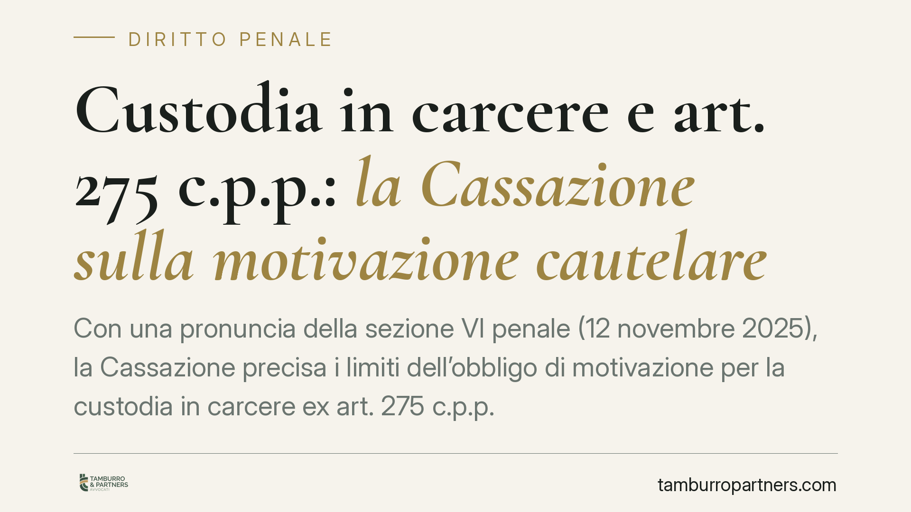

Custodia in carcere e art. 275 c.p.p.: la Cassazione sulla motivazione cautelare
Con una pronuncia della sezione VI penale (12 novembre 2025), la Cassazione precisa i limiti dell'obbligo di motivazione per la custodia in carcere ex art. 275 c.p.p. Il giudice non deve usare formule sacramentali: decisiva è la valutazione concreta della gravità dei pericula libertatis. Un principio che incide direttamente sulla tenuta delle ordinanze cautelari e sulle strategie difensive.

Il caso
La questione nasce dal contenzioso su alcune ordinanze applicative della misura più afflittiva, la custodia cautelare in carcere. In sede di riesame e di impugnazione era stato contestato che il giudice non avesse esplicitato con formule dedicate le ragioni dell'inadeguatezza delle misure meno gravose.
La Corte di Cassazione, sezione VI penale, ha respinto questa impostazione formalistica. Non contano le clausole di stile: conta se, dalla lettura complessiva del provvedimento, emerge una valutazione concreta e attuale del pericolo che giustifica la scelta del carcere.
Inquadramento normativo
L'art. 275 c.p.p. governa i criteri di scelta delle misure cautelari. Il comma 3 stabilisce che la custodia in carcere può essere disposta solo quando ogni altra misura risulti inadeguata. È il principio del minimo sacrificio necessario: il carcere è l'extrema ratio, non l'opzione di default.
Da qui l'obbligo, per il giudice, di motivare due profili. Primo: la sussistenza dei pericula libertatis, cioè i pericoli previsti dall'art. 274 c.p.p. — inquinamento della prova, fuga, reiterazione del reato. Secondo: la ragione per cui misure meno afflittive (arresti domiciliari, obbligo di firma, divieto di dimora) non bastano a contenere quel pericolo.
La Cassazione chiarisce che questo secondo requisito non richiede una motivazione autonoma e separata con formule esplicite. Quando la gravità concreta del pericolo emerge dagli elementi valorizzati dal giudice, l'inadeguatezza delle misure minori può risultare in modo implicito ma logicamente coerente dal ragionamento complessivo. Ciò che non è ammesso è la motivazione apparente o meramente tautologica.
Implicazioni pratiche
La pronuncia sposta il baricentro dalla forma alla sostanza. Per la difesa questo ha un doppio effetto.
Da un lato, non basta più eccepire l'assenza di una formula rituale sull'inadeguatezza delle misure alternative: un simile motivo di impugnazione rischia di essere respinto se il provvedimento, letto nel suo insieme, regge sul piano logico.
Dall'altro, si apre uno spazio difensivo più aggressivo sul merito. Se il fulcro è la gravità concreta e attuale del pericolo, la difesa deve contestare proprio quella: l'attualità del rischio di reiterazione, la distanza temporale dai fatti, l'assenza di elementi che indichino una reale volontà di fuga o di inquinamento probatorio.
Per il Pubblico Ministero e per i giudici, la lezione è speculare. Un'ordinanza costruita su clausole di stile, senza aggancio agli elementi concreti del caso, resta vulnerabile. La solidità del provvedimento non dipende dalle parole usate, ma dalla catena logica che collega i fatti al pericolo e il pericolo alla misura scelta.
È bene ricordare che questo principio si inserisce in un quadro dove il legislatore ha progressivamente rafforzato l'obbligo di motivazione autonoma del giudice, proprio per contrastare il ricorso automatico alla misura carceraria.
Cosa fare in concreto
- Analizzare l'ordinanza nel suo insieme, non a segmenti: verificare se esiste una reale catena logica tra elementi indiziari, pericolo e scelta della misura.
- Concentrare l'impugnazione sull'attualità del pericolo: contestare la persistenza concreta dei pericula libertatis è più efficace del rilievo puramente formale.
- Documentare gli elementi favorevoli — condizioni personali, familiari e lavorative, tempo trascorso dai fatti — per sostenere l'adeguatezza di misure meno afflittive.
- Valutare tempi e strumenti: riesame ex art. 309 c.p.p. e ricorso per cassazione hanno logiche e termini diversi; scegliere consapevolmente la via.
- Non affidarsi a eccezioni di stile: preparare la difesa sul contenuto sostanziale del ragionamento cautelare.
La direzione tracciata dalla Cassazione premia le difese costruite sul merito. Consigliamo di impostare il lavoro sin dalle prime ore successive alla misura, quando la ricostruzione degli elementi favorevoli è più efficace.
---
*Contributo informativo a cura di Tamburro & Partners - Avv. Giuseppe Tamburro. Non costituisce parere legale.*
Ogni condominio ha una storia a sé.
Se gestisci un'amministrazione e vuoi un confronto su una specifica questione condominiale, scrivi allo studio. Ti rispondiamo entro un giorno lavorativo.